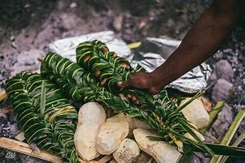

facts about Lovo
Lovo is traditional dish from the Pacific and it has meat and side dishes in it such as Cassva and more. For the preparation we actually dug up the hole and burn the rocks till it has the right temperature and we will place all the meat and side dishes in it.
